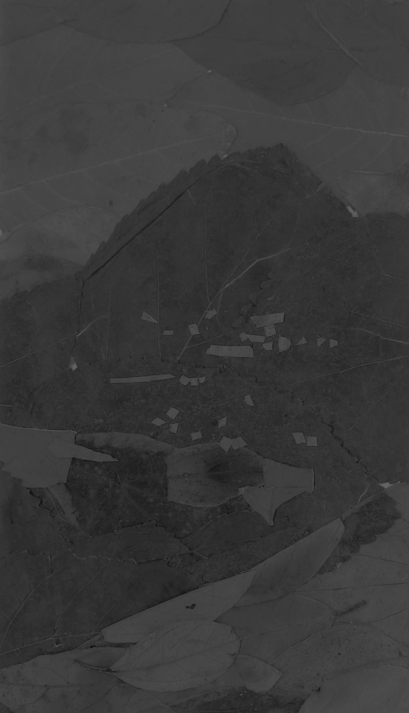

I've never climbed so many stairs in one day
in my goddamn life. 180 floors. Have you ever
descended 1,200 stairs consecutively?
I have now.
It's a truly singular experience.
in my goddamn life. 180 floors. Have you ever
descended 1,200 stairs consecutively?
I have now.
It's a truly singular experience.
Positano
Location:
Positano,
Amalfi Coast,
Italy
Materials:
Leaves from the Sentiero Degli Dei
Journal entry
Scribbling this down very quickly to remember this moment forever. I’m on an outcropping along the Path of the Gods on the Amalfi Coast. This is so beautiful. The solitude is so full and round and smooth. People are down below – but I’m up here. My toes are sore and covered in dirt. Geckos slip across rocks. Insects twitter in the brush around. The golden hour is fading but this moment is so perfect and beautiful and just what I wanted my life to be like. Everything below is so still from far away. I know my cell phone camera could never capture what I’m witnessing as the sun sets behind one of the hills across the way. No hike I take will compare to this one for a long, long time. I wish I could capture it and return to right now whenever I wanted.